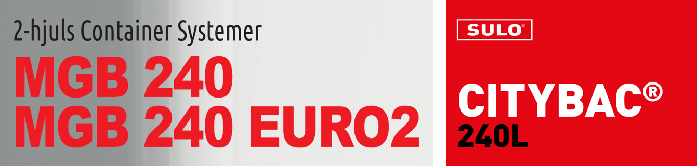
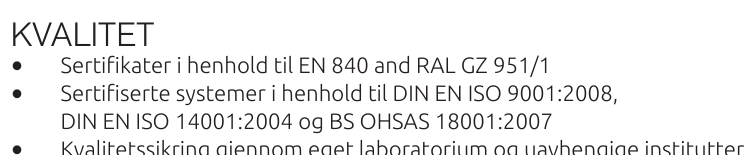
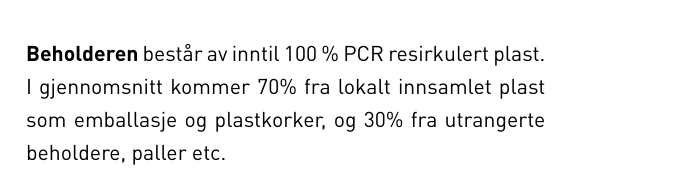
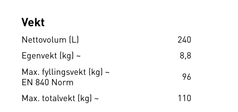

DR-001
Dokumentgjennomgang · 6. oktober 2026
Produktdatablad Citybac 240 L,
lest som vedlegg til tilbudet.
Det gjeldende publiserte databladet for Citybac 240 L er lest mot kravspesifikasjonen i Bilag 2, krav for krav. Ingenting her er en poengsetting. Det er oppdragsgiver som gir poeng.
Metode
Bilag 2 stiller seksti nummererte krav. Tjueseks gjelder leveranseplan, opsjonspris eller reklamasjonsprosedyre, som intet produktdatablad besvarer. Trettifire gjenstår.
Besvart betyr at dokumentet oppgir det oppdragsgiver spør om. Delvis betyr nær, men ikke på poenget. Mangler betyr at det ikke finnes noe å peke på.
Resultatet
Ni av
trettifire
kan
besvares.
Krav 1, 2, 7, 11, 13, 14, 15, 17, 18. Fabrikat, produktblad, mål, vekter, alle størrelser, hjul, brems.
Krav 3, 4, 22, 27, 41, 46, 57. Nevnt, men ikke på delen, fargen eller det forpliktende tallet som kreves.
Krav 5, 6, 8, 9, 10, 12, 16, 19–21, 23–26, 28, 47, 58, 60. To av disse sto i databladet fra 2020.
Vurdert som ett dokument. Alle seks størrelsene rammeavtalen kjøper — 80, 140, 240, 360, 660 og 1000 liter — har et gjeldende datablad etter samme åtte siders mal, så det som mangler her mangler i hele serien.
Funn / Ark 2
DR-001
Fire ting en evaluator ser først.

Funn 01 / Krav 2, A
To datablad, ett produkt.
«Det vedlegges produktblad / brosyrer over beholderne.»
Databladet fra 2020 ligger fortsatt ute ved siden av det fra 2025. En tilbyder kan vedlegge begge.

Funn 02 / Krav 5 og 6
To standarder forlot dokumentet.
«…i tråd med kravene i NS-EN 1501-5.» «…sertifisert etter RAL-GZ 951/1.»
Begge står i databladet fra 2020. Ingen av dem står i noen av de seks gjeldende.

Funn 03 / Krav 57, A · klima 30 av 100
Inntil er ikke en minsteandel.
«Forpliktende minimumsandel PCR (vekt-%) oppgis separat…»
Databladet sier inntil 100 prosent. Kravet er et gulv, per del, med tredjeparts sertifikat.

Funn 04 / Krav 3 og 4, begge A
EN 840 er en rad i en vekttabell.
«Beholderne skal tilfredsstille NS EN 840 del 1-6… vedlegge dokumentasjon.»
Ingen del av standarden, intet sertifikatnummer, intet organ og ingen dato.
Kravet til hjuldiameter er oppfylt i det gjeldende databladet. To standarder gikk motsatt vei.